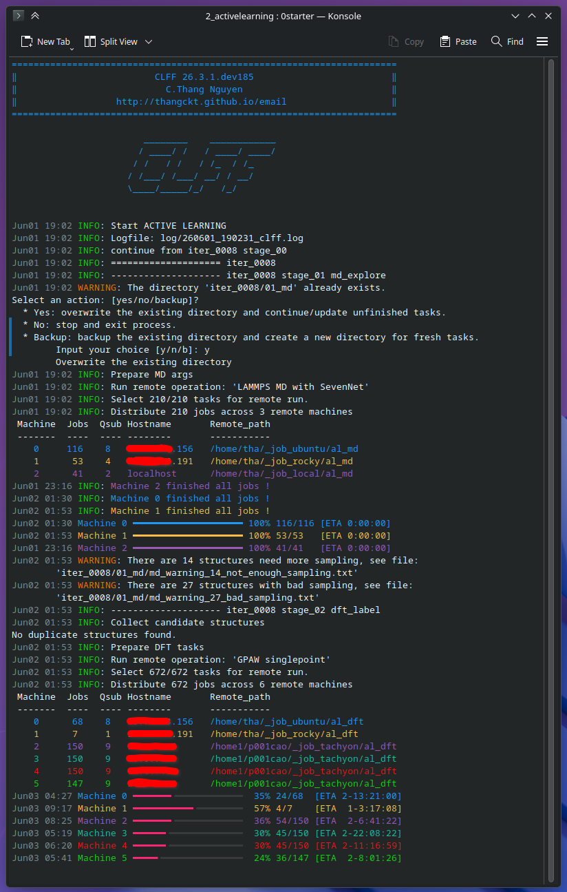

clff Documentation¤
clff
¤
CLFF: Automated Framework for Concurrent Learning Force Fields and Material Properties Calculations.

Developed by C.Thang Nguyen.
CLFF is an end-to-end workflow for generating graphNN-based force fields through iterative concurrent learning cycles (ML training → MD exploration → DFT labeling). The workflow is fully modular and highly customizable, enabling the entire process to run end-to-end without any user intervention. Key features of CLFF include:
- Automatic generation of necessary scripts for ML training, MD simulations, and DFT calculations.
- Submission of jobs to remote clusters, supporting multiple connection protocols (e.g., Local, SSH, Cloud APIs, etc.), job schedulers (e.g., SLURM, SGE, PBS, TORQUE, etc.), and heterogeneous computing resources.
- Automated monitoring of job status and retrieval of results upon completion.
- Parsing of results and execution of concurrent learning iterations automatically.
- Candidate-selection criteria based on energy, forces, (and/or) stresses.
- Easily configure sampling spaces, including (and/or) temperatures, stresses, enhanced samplings, van der Waals correction.
- Support multiple MD/DFT calculators.
- Support any Enhanced Sampling methods (e.g., Metadynamics, Umbrella sampling, etc.) that interface with PLUMED.
- Support several leading graph-based MLIP architectures.
A unique capability of CLFF is its support for distributing workloads across multiple remote clusters. Rather than relying on a single cluster with long queue times, CLFF can asynchronously submit, monitor, and collect results from several heterogeneous computing infrastructures, dramatically accelerating the concurrent learning workflow. Imagine combining computing resources from entirely different sources - such as Google Cloud, Amazon Web Services, national super-computing centers, local campus clusters - and having them collaborate seamlessly within a central workflow? This is exactly what CLFF is designed for.
Or consider a practical scenario in which thousands of atomic structures must be labeled using DFT calculations on two heterogeneous clusters, one equipped with GPUs nodes + CPUs nodes + SLURM scheduler, and the other with only CPU nodes + SGE scheduler. You may want to run half of the DFT jobs on the first cluster's GPUs nodes, a quarter on its CPUs nodes, and the remaining quarter on the second cluster's CPU nodes, simultaneously. CLFF easily handles this complex job distribution. With simple configurations, CLFF automatically distributes, schedules, and manages all jobs across the available resources without any manual intervention.
The modular design allows CLFF to easily extend/implement new functionalities/workflows. It already includes many built-in workflows to automatically compute Phonon dispersion, Potential energy surface (PES), elastic constants tensor, and more will be added.
The only task required from users is to provide a configuration file - then fasten the seatbelt and enjoy the ride.
